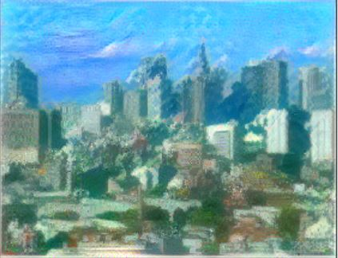
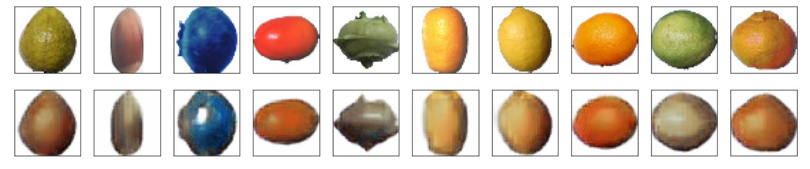

Autoencoder & Generative Models
Compared to discriminative models which learn the conditional distribution P(Y|X=x) directly
(such as kNN, SVM, Neural Networks, etc.), generative models learn the joint distribution P(X,Y)
which assumes the data is generated by the underlying distribution P(X,Y).
Examples of generative models include
Naive Bayes, Gaussian Mixture Models, and Bayesian Networks.
One of the interesting fields of machine learning in AI is the capability for creative activities, this can
include create new images, texts, and even musics and videos. This is based on the assumption that
everything around us has some statistical structure and is generated by some unknown and complex
underlying process, and the goal will
be using machine learning to learn this underlying structure and then sample from the statistical
latent space to create new data. Generative models are for these types of tasks - learn the generating
process for the training data and be able to sample from the latent space to give us new data that
we might have never seen before.
The following pictures are generated by an algorithm known as neural style transfer (as the name
suggests, use deep learning algorithms to apply the style of a picture to another picture and therefore
generate new pictures). As shown below, three types of styles (sky, beach, snow) from three different
reference images are applied to the picture
of a city view (the content image). The new generated images still have the city view content but the
background (style) of the
images are now being changed according to the styles of the reference images.
This is done by using a simple Convolutional Neural Network (ConvNet), where the upper-level activations
of the ConvNet learn the more global & abstract content of the input image and the internal correlations
between activations learn the style of the reference image (as style is more local on textures, colours,
etc.).



Autoencoders
Briefly speaking, autoencoders are data compression algorithms that are used to learn efficient
latent representation of the data (dimension reduction) by training the model to remove the "noise"
from the data. As the example shown below, an autoencoder consists of the following parts:

1. Encoder - learns the latent representation from the input data and compresses the data
into a compact form (known as code or encoding)
2. Decoder - decodes the code back to a reconstructed data that ideally is similar to the input data
Both the encoder and decoder can be chosen as any function, for example, neural networks. The parameters of the
encoder and decoder can be optimized by minimizing the reconstruction loss between
the original data and the
reconstructed data (for example, Mean Square Error loss or Cross Entropy loss).
Examples of Autoencoders
Example 1. Simple Autoencoders
The first example uses a simple single layer neural network for both encoder and decoder. Original
images are in size 50*50*3 (RGB images) which have a dimension of 7,500. The encoded latent representation
has a dimension of 256 which means the compression ratio is 7500/256 = 29.3. A comparison between the
original and reconstructed images are shown below. For illustrations, two different autoencoders are built on
two different datasets, the first one being the Anime dataset and the second one being the Fruit dataset.
Anime dataset. Loss on the test set is 0.55 and it can be seen that the reconstructed images did not capture
the original images well, but interestingly the reconstructed images have shown various styles of images in
the dataset.
Fruit dataset. Loss on the test set is 0.40 and again it can be seen that the reconstructed images
did not capture
the original images well. Also note that the fruit images have less details than the anime images which
possibly means they are easier to encode.
Remarks
A single layer autoencoder with linear activation function and squared error loss
is actually nearly equivalent (same spanned subspace) to Principal Component Analysis (PCA) which
projects the data into a subspace. Note that here the autoencoder is not exactly linear as the activation
functions are non-linear (ReLu and Sigmoid functions).
Example 2. Deep Autoencoders
The second example uses a 3-layer neural network for both encoder and decoder. Again the encoded
latent representation has a dimension of 256 which means the compression ratio is the same as the
simple autoencoder. A comparison between the original and reconstructed images are shown below.
Anime dataset. Loss on the test set is still 0.55 and no improvement can be seen for the reconstructed
images. Perhaps because the latent dimension is not big enough to encode the data which has very complex
structures.
Fruit dataset. Loss on the test set is 0.38 and it can be seen that the reconstructed images
are slightly better than that from the simple autoencoder.
Remarks
Note
that deep autoencoders project the data not onto a subspace but onto a non-linear manifold which means
they can learn much more complex encodings for the same encoding dimension compared to simple
autoencoders and PCA. However, bottle neck on the encoding dimension can still be a big problem for
encoding images with complex structures.
Example 3. Convolutional Autoencoders
The third example uses a convolutional neural network for both encoder and decoder. In this case the encoded
latent representation has a dimension that is much higher than the deep and simple autoencoders which means
they possess much higher entropic capacity.
A comparison between the original and reconstructed images are shown below.
Anime dataset. Compared to the previous autoencoders, it can be seen that the convolutional
autoencoder can encode the complex images much better, even though it still misses many of the details
(especially shades of colours).
Fruit dataset. Similarly the convolutional autoencoder gives much better reconstructed images
than the previous autoencoders.

Applications of Autoencoders
In practice autoencoders are not useful tools for data compression compared to algorithms such as JPEG,
mainly because they are lossy (outputs will always be degraded) and the fact that they are usually
very specific to the training data (data-specific and cannot be generalized to a broad range of images).
However, there are many useful applications of autoencoders:
Feature extraction & Dimension reduction - autoencoders can learn more interesting features
than PCA, and the extracted features can be used for visualization or as inputs for another dimension
reduction algorithm such as tSNE
Image Denoising & Neural painting - train the autoencoder with input as clean images and target as noisy images.
This technique can also be used for neural painting such as remove watermarks on photos. An example of
image denoising on the anime dataset is shown below. First row being the noisy images, second being the
recovered images, and the last row being the clean original images.
Variational Autoencoders
Compared to traditional autoencoders, variational autoencoders (VAE) are generative models
- which means
not only they can compress data but they can also generate new data (e.g. images) that we have never seen
before. As shown in the graph below, instead of encoding the input into a fixed code, the encoder
will encode the input into parameters of a statistical distribution and this allows a
stochastic generation of encoded input. In other words, for the same input, the reconstructed
output will be different on each single pass due to the randomness from sampling of the latent distribution.
Structured and Continuous Latent Space
The key reason that traditional autoencoders cannot generate new images is the fact that the learned
latent space is discontinous, which means if the decoder never saw the encoded data before
(which is very likely because there are gaps in the space) then the generated output will be unrealistic.
On the other hand, by encoding the input into a probability distribution, the decoder can learn an area or
cluster of points in the latent space with a wide range of variations, and the continuous latent space
will not leave many gaps where the decoder has never seen before. This allows the VAE to generate variations
from the training data and therefore gives us new outputs.
Reconstruction and Regularization losses
Compared to autoencoders which uses only the reconstruction loss, VAEs involve two losses:
Reconstruction loss - same as in autoencoders, this loss forces the sampled output to match
the original input.
Regularization loss (KL-divergence between the latent distribution and the prior distribution)
- this term helps in reducing overfitting of the model to the training data as well as helps in learning
a more structured and continuous latent space. Note that the learned latent distribution is the posterior
distribution.
Remarks
Choice of prior distribution - although in theory the prior distribution for the encoding can be
chosen as any distribution, for example, Gaussian, uniform, mixture of Gaussians, etc, the most commonly
used distribution is the standard Gaussian distribution. One of the reasons is that
it can be shown that by using a standard Gaussian distribution as the prior,
an analytical formula can be derived for the KL-divergence between
the prior and posterior using the reparametrization trick. Note that the KL-div loss tries to
force the posterior latent distribution to be the same as the standard Gaussian prior distribution.
Equilibrium between the two losses - if we consider the context that the training data can be
clustered into different groups, then the reconstruction loss helps in ensuring that enough
similarity of nearby encodings can be achieved by minimizing the cluster variance and
segregating cluster means, while the KL-divergence loss helps in making sure that there are some
overlapping between different clusters so that there are enough variations that can be made
(i.e. making sure the latent space is continuous and dense so that smooth interpolation can be made).
Therefore, the KL-divergence loss is a key component for training a VAE.
Disentangled variational autoencoder - Disentangled VAE is a form of VAE that tries to make sure
that the hidden units in latent space are de-correlated by adding a hyperparameter to the
KL-divergence loss. The goal is to create a compact latent space so that more meaningful
concept vectors and feature extractions can be done.
Applications of VAEs
There are many interesting applications of VAEs, include image editing and latent space animations:
Image editing & Concept vectors - because the learned latent space supposed to be highly
structured and continuous, it is possible to find concept vectors - vectors in the latent space
that actually encode meaningful information of variations. For instance, by finding a "smile concept vector",
we can transform a face into a "smile face".
Latent-space animations - depend on how we sample from the latent distribution, we can create
a series of animations by showing an input image slowly morphing into another image through a series
of intermediate transformations. Some examples are shown below.
Examples of latent-spaced animations
Example 1. Anime dataset
Since the prior distribution is the standard Gaussian, the inverse CDF of standard Gaussian is used to
produce values of the encodings. It can be seen that by sampling from different regions of the latent space,
different samples are created and the bigger the region is, the more variations the sampled outputs can have.
Sample from 0.05-0.95 range of the standard Gaussian CDF.
Sample from 0.5-0.95 range of the standard Gaussian CDF.
Sample from 0.05-0.5 range of the standard Gaussian CDF.

Example 2. Fruit dataset
Sample from 0.1-0.9 range of the standard Gaussian CDF.
Sample from 0.1-0.5 range of the standard Gaussian CDF.
Sample from 0.2-0.6 range of the standard Gaussian CDF.
Sample from 0.8-0.9 range of the standard Gaussian CDF.
Last updated on Apr 26, 2020